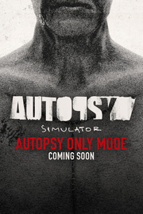

Autopsy Simulator
Detalles
|  | |
| Tiempo de juego | No Jugado |
| Última actividad | Nunca |
| Añadido | 11/6/2024 14:41:31 |
| Modificado | 11/8/2024 17:33:32 |
| Estado de finalización | No Jugado |
| Librería | Playnite |
| Fuente | 6TB STORE |
| Plataforma | PC (Windows) |
| Fecha de lanzamiento | 6/6/2024 |
| Puntuación de la Comunidad | 48 |
| Puntuación de la Crítica | |
| Puntuación de usuario | |
| Género | Indie Simuladores |
| Desarrollador | Woodland Games |
| Editor | Team17 Digital Ltd |
| Característica | Cloud Saves Logros De Préstamo Familiar Un Jugador |
| Enlaces | Punto de encuentro Discusiones Guías Noticias Página de la tienda PCGamingWiki Logros |
| Tag | Ambientales Aventura Buena trama Contenido sexual Desnudez Indie Oscuros Para adultos Primera persona Realistas Sangre Sangriento Simulación Simulador médico Terror Terror psicológico Un jugador |
Descripción
Autopsy Simulator es un juego de simulación con elementos de terror que sitúa al jugador en un escenario misterioso. El jugador toma el papel de un patólogo llamado Jack. Durante la autopsia de una misteriosa mujer, Jack encuentra en su interior el anillo de compromiso de su esposa Kate, desaparecida hace tiempo. A medida que el juego avanza, se revelan otros elementos del misterio. Para revelar toda la verdad, Jack tiene que librar una batalla con fuerzas siniestras y con sus propios pensamientos.
Examina los informes, busca en los archivos, averigua el historial de la víctima.
Todo el mundo tiene una historia. Para hacer bien una autopsia, hay que conocer a la víctima por dentro y por fuera.
.gif?t=1729500026)
Casos analizados por especialistas
Cada caso fue creado con la ayuda de patomorfólogos y médicos forenses, por lo que te sentirás como si estuvieras involucrado en un proceso de autopsia real.
_copy.gif?t=1729500026)
Cartografía detallada de órganos y casos
Nos centramos en el realismo, por lo que los órganos, su documentación, las lesiones y los casos se presentan con atención al detalle y realismo
.gif?t=1729500026)
Una combinación de simulador y juego de terror
Se trata de una combinación sin precedentes: además de una representación realista de la autopsia, contaremos una historia escalofriante e interesante.
.gif?t=1729500026)